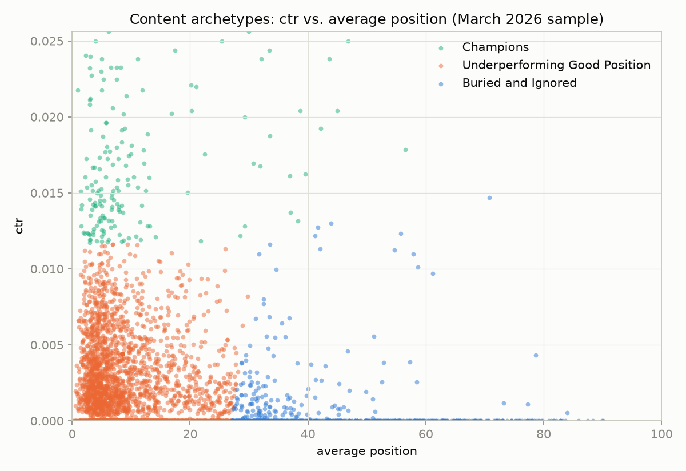

Abstract
Which content pages should an SEO team review first, given limited time? Using a pseudonymized snapshot of 125,645 content items with real search-console coverage from a single month (March 2026) of the FlyRank internship warehouse, this study applies K-Means clustering on click-through rate and average search position to discover behavioral archetypes without any predefined labels. The resulting model clears a random-assignment baseline by a wide margin (silhouette −0.015 vs. 0.62 train / 0.53 test) and holds up on client accounts it never saw during fitting — evidence the archetypes reflect real structure, not fitting noise. Three archetypes emerge: a small, high-performing Champions group (4.6%), a large Underperforming Good Position group (77.8%) that ranks well but converts poorly to clicks, and a Buried and Ignored group (17.5%) that ranks and converts poorly. The output is a ranked, human-reviewed action queue intended as decision support for prioritizing limited review time — not an automated or causal recommendation engine.
1. Introduction
An SEO content team rarely has time to review every page in a portfolio. Someone has to decide, every cycle, which handful of pages get attention first — and a wrong call cuts both ways: a page that actually needs work but gets marked "fine" loses recoverable traffic, while a page that's fine but gets flagged wastes a reviewer's limited time.
Early exploration of this content portfolio showed engagement metrics are heavily skewed: most pages sit near zero engagement, while a much smaller group performs far better. That is evidence of distinct behavioral groups, not one uniform population — exactly the situation clustering is built for, and exactly what a single fixed-threshold rule (e.g. "flag anything under X impressions") cannot capture, since it can't see how multiple signals interact.
This paper frames the problem as unsupervised discovery rather than prediction: what performance archetypes exist across a content portfolio, and which pages should a reviewer look at first? The output is a ranked, reasoned queue for a human reviewer — not an automated action, and not a causal claim about what fixing a page will do.
2. Data
Release: the FlyRank pseudonymized internship warehouse
(FlyRank/internship-warehouse on Hugging Face, gated release), queried
directly over remote Parquet via DuckDB — no raw data downloaded or stored locally.
Tables: fact_content_daily_performance (grain: report_date
× client × content, partitioned by month) for daily search performance, and
dim_content for content metadata, used only for later profiling, never as a
clustering input.
Date window: March 2026 (month = '2026-03'), a single-month
snapshot. March was deliberately chosen as a mid-panel month, not the first or last month
in the warehouse's history, where tracking coverage tends to be thinnest.
Unit of analysis: one row per content item, with click-through rate and average search position computed from that item's own March days where search-console data was actually available.
What was excluded, and why
- Items with no real search-console coverage in March. Verified directly: only 53.3% of the ~331K-item March pool (176,738 items) had any real coverage that month — the rest were excluded because they weren't measured, not because they were inactive.
- Items with fewer than 30 total impressions in March — a volume floor added after a real finding: an early clustering attempt produced a suspiciously perfect result driven entirely by a handful of near-zero-impression items where a single lucky click created a misleadingly high ratio.
- Any label-derived column (trend direction, trend percentage, a decline label). These are the source a proxy label would be built from, never an independent feature.
- Any product flag or composite score already computed by FlyRank's own system. Using these as inputs would just relearn an existing internal rule, not discover new structure.
- Per-channel session breakdowns. Checked, not assumed: these columns did not reconcile against reported session totals, so they were excluded rather than trusted.
Public-safety note: everything in this study uses pseudonymized content and client identifiers only, for joining and grouping. No client names, domains, URLs, page titles, or raw search queries appear anywhere in this work.
3. Methodology
Method: K-Means clustering, with k chosen by silhouette
score rather than assumed, fit on two standardized features: click-through rate (ctr)
and average search position. Standardization matters here — without it, position's
larger raw numbers would dominate distance calculations purely due to scale, not because
position is more informative than ctr.
Label: none. This is unsupervised discovery, not prediction — there is no ground-truth "archetype" to predict. The proxy for behavior is the feature set itself, and a cluster only becomes meaningful once its contents are inspected and named.
Assumptions checked, not assumed
- One content item maps to exactly one client — verified with a grain check (zero rows where a content item spans more than one client).
kwas not fixed in advance. Values 2 through 6 were scored by silhouette. A first attempt at k=2 scored a suspiciously perfect 0.94 — traced to 279 near-zero-impression items faking a cluster, not a real archetype. After adding the volume floor, k=3 was the honest winner.
Baseline
A dummy baseline — random cluster assignment, no informed logic at all — scored −0.008 silhouette, essentially zero, confirming that random grouping carries no real structure. The real model has to beat this floor, not just "look better than nothing."
Validation design
A client-grouped split, not a random row split. Content items from the same client can share hidden patterns, so a random split risks leaking client-specific quirks into both sides and making the model look more stable than it really is. Comparing a naive random split (train/test silhouette gap: 0.0016, nearly identical) against the honest grouped split (gap: 0.08, over 50× larger) confirmed the concern was real: random splitting hides genuine between-client variation that grouped splitting reveals.
Leakage checks run
- Timeline confirmed: report dates stay strictly inside March 1–31, 2026.
- No label-derived or sibling columns used as features.
- No product flags used as features.
- Split grouped by the repeating entity (client), not random rows.
- A dummy random baseline stands in for a base rate, so structure has to beat noise.
- The suspiciously perfect k=2 result was investigated, not celebrated.
- Every test-side metric uses a scaler/model already fit on train, applied via transform/predict — never refit on test.
- Test-harness sanity check: deliberately feeding the cluster label back in as a feature raised the silhouette score (0.62 → 0.66), confirming the leakage-detection test itself actually works before trusting that no leakage was found elsewhere.
4. Results
Same split, same metric (silhouette score), computed in the same run:
| Method | Silhouette | What it means |
|---|---|---|
| Dummy baseline (random assignment) | −0.015 | No real structure, the floor |
| K-Means, k=3 (train) | 0.624 | Real, meaningful separation |
| K-Means, k=3 (test, unseen clients) | 0.529 | Held up on clients never seen during fitting |
Figures above are this paper's own reproducible run (see
capstone.ipynb). Earlier validation passes on different client-grouped
splits (w05, w06) landed train in 0.52–0.62 and test in 0.53–0.64 —
every observed run clears the dummy baseline by a wide margin.

Figure 1. CTR vs. average position for a 4,000-item sample, colored by archetype. Champions and Underperforming Good Position occupy the same position range but separate cleanly on CTR; Buried and Ignored occupies a distinct, worse position range almost entirely.
5. Limitations & Honest Framing
- Not causal. This is a cross-sectional, observational snapshot — no experiment was run. The archetypes describe how pages currently behave, not why, and nothing here says a refresh or a title change will fix anything. The correct framing is decision-support: "these pages look worth reviewing first, because…", never "doing X will produce Y."
- Single-month scope. Everything is built on March 2026 only. Content behavior shifts with seasonality, algorithm changes, and editorial work already underway. The archetypes were validated to generalize across clients within this month, not across time — a page's archetype could look different next month, and this has not been tested.
- Partial population. Only items with real search-console tracking (53.3% of the broader pool) and at least 30 impressions in March are covered. The rest are excluded for lack of data, not inactivity, and this work says nothing about them.
- Only two features, on purpose. The model groups pages by how they behave, not why — it says nothing about topic, intent, word count, or content quality. A reviewer still needs that context before acting.
- Fuzzy boundaries, not hard categories. A hand review of borderline cases found pages sitting right at a cluster's edge — e.g. a page with a reasonably good position but zero clicks, still counted as Buried despite an almost-escaping position. Archetype membership is a strong hint, not a verdict.
- Engagement-based signals (GA4) were dropped from the core model, not because they're uninteresting, but because real GA4 coverage in March 2026 was only 27.3% — too thin to build the primary archetypes on honestly.
6. Ranked Recommendations
Each validated archetype maps to one reason code and one action:
| Archetype | n | % | Mean CTR | Mean position | Reason code | Action |
|---|---|---|---|---|---|---|
| Underperforming Good Position | 97,799 | 77.8% | 0.20% | 9.75 | ctr_below_expected | refresh_and_review_ctr |
| Buried and Ignored | 22,015 | 17.5% | 0.06% | 45.28 | buried_low_priority | deprioritize_or_prune_review |
| Champions | 5,831 | 4.6% | 2.14% | 10.41 | champion_maintain | protect_and_monitor |
The queue orders Underperforming Good Position first (the clearest fixable opportunity: good ranking, disappointing clicks), then Champions (already working, watch for drift), then Buried last (lowest expected return on review effort). Within each archetype, items are ordered by audience size, so a reviewer's limited time goes to the biggest-audience opportunities first.
Human review is required before any action
The model only sees ctr and average position. A reviewer still needs to check the actual page content, whether a search-results feature or a sibling page is absorbing clicks, whether the page is even still live and correctly tracked, and any client-specific context the model can't know.
Nothing here is automated. No automatic content edits, no automatic pruning of "Buried" pages, no automated SEO changes of any kind without a human sign-off — this is a prioritization tool, not an action system.
7. Reproducibility
Every number in this paper traces back to a notebook in the project repository:
github.com/mrym828/Machine-learning-internship.
All random processes use a fixed seed (random_state=42), and every warehouse
query orders rows deterministically before any split or model fit — a real
reproducibility bug (row order from the underlying SQL query affecting K-Means
initialization near cluster boundaries) was found and fixed along the way; re-running
the affected notebook twice now reproduces identical results.
This paper is drawn directly from
work/notebooks/capstone.ipynb,
which reruns the full pipeline end to end. The week-by-week notebooks it builds on:
w03_data_contract.ipynb— the data contract and coverage checksw04_baseline_score.ipynb— signal checks and the rule-based baselinew05_model.ipynb— the K-Means model, baseline comparison, error analysisw06_validation_audit.ipynb— the honest-split audit and leakage checklistw07_action_playbook.ipynb— the ranked action queue and exportscapstone.ipynb— the notebook this paper is drawn from directly
To rerun: clone the repository, request access to the gated Hugging Face warehouse
release, set a HF_TOKEN in a local .env file (never committed),
and run the notebooks in the order above.
8. Acknowledgments & Data Credit
Built on the FlyRank ML Internship dataset. Learn more at flyrank.ai.